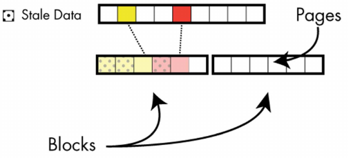
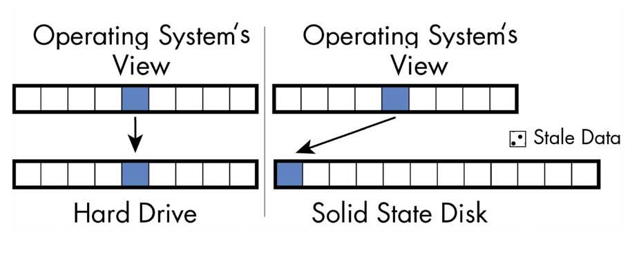
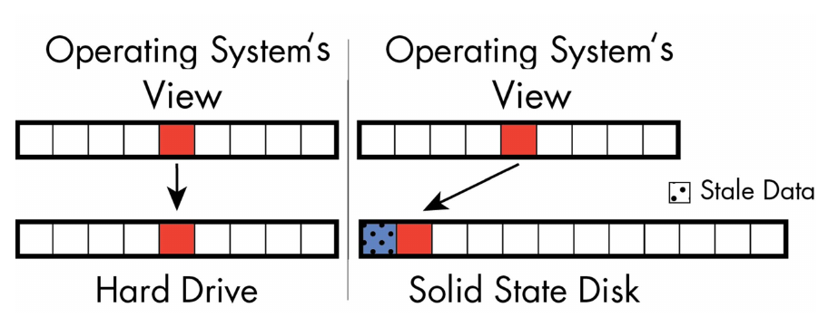
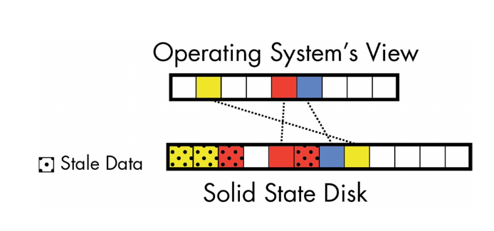
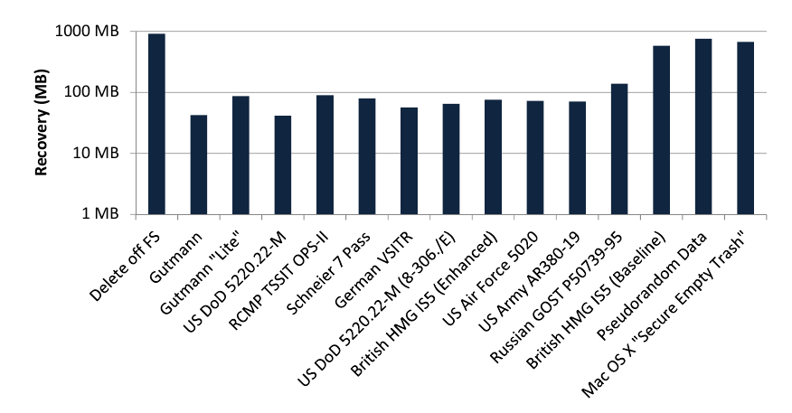
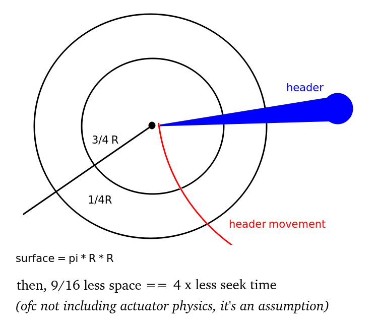
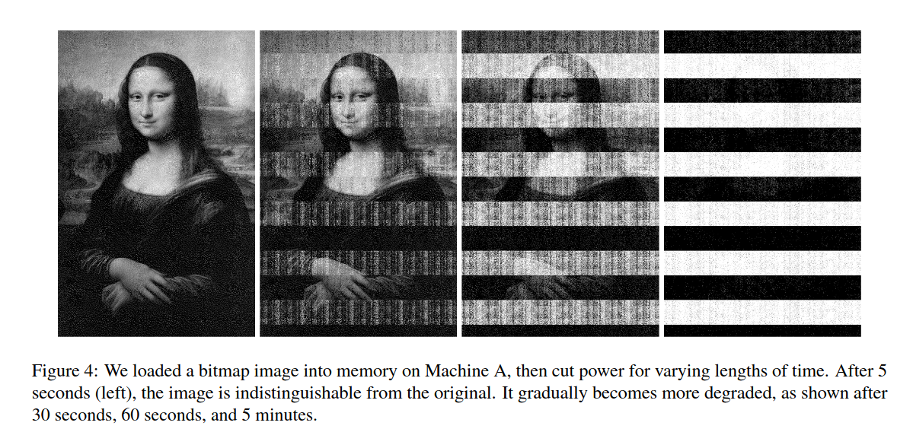
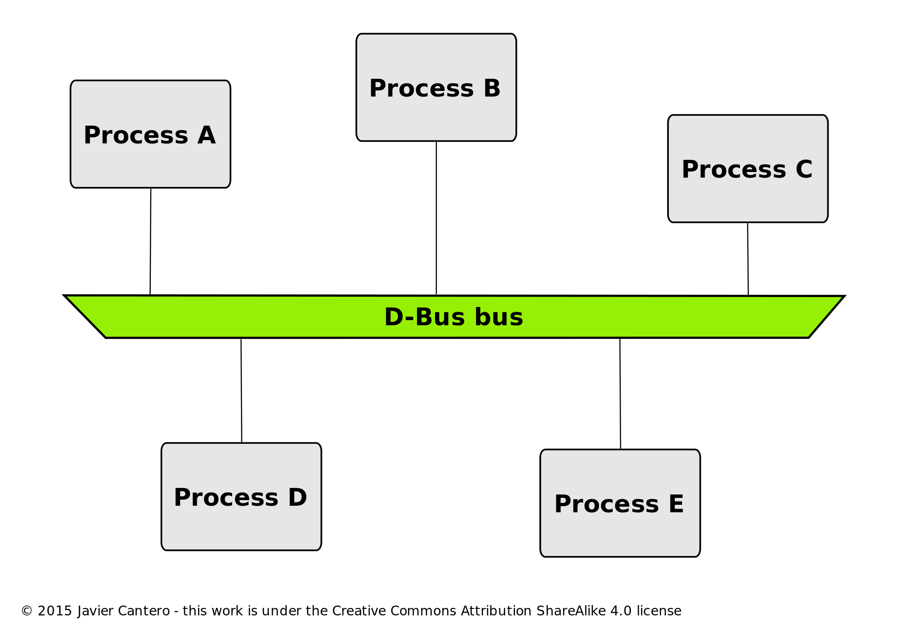

Howto!
Effectively (auto-)nuke your storage?
（╯°□°）╯︵(\ .o.)\
Why encrypt
when you have nothing to hide? (づ｡◕‿‿◕｡)づ
Develop a good practice
At work: GDPR ? Sensitive data?
Selling your drive or removable storage?
What if someone steals your laptop?
Or sometimes this happens...
Workshop plans
- Software vs. hardware encryption
- HDD sanitization
- SSD low level
- SSD sanitization
- Special case: memory sticks
- A few drive-related curiosities
- Software encryption: Luks
- Triggering: D-bus and other ideas
- Creating an opus magnum
Before we begin

We don't want that, do we?
Fortunately for us!
https://en.wikipedia.org/wiki/Key_disclosure_law#Poland
In relatively few known cases in which police or prosecutor requested cryptographic keys from those formally accused and these requests were not fulfilled, no further consequences were imposed on the accused. There's no specific law in this matter, as e.g. in the UK. It is generally assumed that the Polish Criminal Procedure Code (Kodeks Postępowania Karnego Dz.U. 1997 nr 89 poz. 555.) provides means of protecting against self-incrimination, including lack of penalization for refusing to answer any question which would enable law enforcement agencies to obtain access to potential evidence, which could be used against testifying person.
Prerequisites
apt install cryptsetup cryptsetup-nuke-password smartmontools wireshark-qt bruteforce-luks
git clone https://github.com/cryptcoffee/skul
Software vs. Hardware encryption
| Property | Software | Hardware |
|---|---|---|
| Transparent | X | X |
| Hardware-bound auth | option | X |
| Overhead | X | * |
| Fast termination | X | X |
| Auditable | X | ¯\_(ツ)_/¯ |
Erasure by crypto type
Hardware
- BLKDISCARD
- ATA SECURE ERASE (ENHANCED)
- PCIe/NVMe
- SCSI SANITIZE
Software
- US DoD 5220.22-M and other wipe methodologies
- Free space (HDD only, past files)
When a file is deleted
It's just marked as so in filesystem &
On HDD it can be now overwritten by the system
On SSD - (╯°□°）╯︵ ┻━┻
HDD sanitization
- Blocks, sectors, LBA
- Talking with controller
- Manufacturer sanitization
- Software shredding
Blocks, sectors, LBA
- In a magnetic drive OS has the direct access to physical sectors. That translates directly to filesystem. i.e. Logical == Physical
- Typical sector size: 512B in the past, now 4kB
- Blocks == minimal information chunks size on FS.
Shouldn't be lower than drive sector
blockdev --getbsz /dev/nvme0n1
fdisk -l | grep "Sector size"
Hands on: Controller stuff, intro
We'll be using hdparm and smartctl a lot. Let's get used to them. First, let us analyze a typical output
hdparm -I /dev/sda
smartctl -a /dev/sda
Controller stuff: HPA, DCO
Fun stuff you probably haven't heard off
HPA == host protected area
DCO == Device configuration overlay
Those hide sectors from bios/efi, system and user
(survives everything but secure erase)
# Your OS may ignore this already
cat /sys/module/libata/parameters/ignore_hpa
Controller stuff: Hardware password
Master password == for IT admins, higher order*
User password == self explanatory
We'll be using hdparm for that
*- depends on security mode (high or max), let me show youHands on: set hardware password
Remember and double-check the password otherwise you'll brick the drive
hdparm --user-master u --security-set-pass pass /dev/sda
# unplug drive, plug in again, notice that kernel throws read errors!
dmesg -c
# Notice, that drive now appears locked!
hdparm -I /dev/sda
# unlock the device
hdparm --user-master u --security-unlock pass /dev/sda
mount /dev/sda1 /mnt/something
dmesg -c
hdparm --user-master u --security-disable pass /dev/sda
# unplug, plug in again. Now there should be no password left
dmesg -c
Hands on: when drive is frozen
# Suspend and wake up
echo -n mem > /sys/power/state
or hotplug SATA
(AHCI must be enabled for SATA hotplugging)
Manufacturer sanitization
Be warned, this takes time
# We need to set password first
$ hdparm --user-master u --security-set-pass pass /dev/sda
# Then wipe
$ hdparm --user-master u --security-erase-enhanced pass /dev/sda
$ hdparm --security-help
ATA Security Commands:
Most of these are VERY DANGEROUS (͡° ͜ʖ ͡°) and can destroy all of your data!
Due to bugs in older Linux kernels, use of these commands may even
trigger kernel segfaults or worse. EXPERIMENT AT YOUR OWN RISK! ᕕ( ͡°ᴥ ͡°)ᕗ
--security-freeze Freeze security settings until reset.
--security-set-pass PASSWD Lock drive, using password PASSWD:
Use 'NULL' to set empty password.
Drive gets locked if user-passwd is selected.
--security-prompt-for-password Prompt user to enter the drive password.
--security-unlock PASSWD Unlock drive.
--security-disable PASSWD Disable drive locking.
--security-erase PASSWD Erase a (locked) drive.
--security-erase-enhanced PASSWD Enhanced-erase a (locked) drive.
The above four commands may optionally be preceded by these options:
--security-mode LEVEL Use LEVEL to select security level:
h high security (default).
m maximum security.
--user-master WHICH Use WHICH to choose password type:
u user-password (default).
m master-password
Software shredding
As the OS has direct access to physical sectors we could just..
# -u; deallocate and remove file after overwriting
# -z; --zero; add a final overwrite with zeros to hide shredding
shred -zu /some/file
It's their own algorithm, described in sources. Self-tested with oscilloscope
https://git.savannah.gnu.org/cgit/coreutils.git/tree/src/shred.c#n626
SSD low level
- blocks, pages
- FTL
- GC process (P/E Cycle)
- TRIM (SAS: UNMAP, PCIe: DEALLOCATE)
How data is stored
Reads pages, erases blocks, writes to empty pages
blocks: 256kB-4MB, pages: 2-32kB
Typically 128 pages per block with 4kB page size
 Source: [1] M. Wei et al. - Reliably erasing SSDsFlash Translation Layer
i.e. controller operations
Over-provisioning
Reserved for controller, rest available to host
Used for:
Garbage collection
Wear leveling
TRIM
Background manufacturer-specific tasks
Garbage collection
 Source: [1] M. Wei et al. - Reliably erasing SSDsGarbage collection
 Source: [1] M. Wei et al. - Reliably erasing SSDsGarbage collection
 Source: [1] M. Wei et al. - Reliably erasing SSDsSSD sanitization
- hdd methods ineffective (unfortunate!)
- dumping flash is easier(& cheaper) than magnetic
- Talking with controller, again ;)
Do HDD Sanitization methods work well on SSDs?
- Degaussing? Nope
- Single file overwrite? Nope
- Multiple disk overwrites? Nope
 Source: [1] M. Wei et al. - Reliably erasing SSDs
Fpga flash dumper
Hands on: SATA SSD
Closely related to HDD controller stuff from before, though we have more options in this case
Btw. BIOS/EFI nowadays has secure erase optionm no need to fully boot
hdparm -I /dev/sda | egrep -i "erase|sanitize|format|crypt"
blkdiscard --verbose [--secure]
# Other ATA commands are the same as in case of HDD
# see next slide
Back to "Manufacturer sanitization"
Hands on: SATA SSD 2
# hdparm -I /dev/sda | egrep -i "erase|sanitize|format|crypt"
* SANITIZE_ANTIFREEZE_LOCK_EXT command
* SANITIZE feature set
* CRYPTO_SCRAMBLE_EXT command
* BLOCK_ERASE_EXT command
* Device encrypts all user data
supported: enhanced erase
2min for SECURITY ERASE UNIT. 2min for ENHANCED SECURITY ERASE UNIT.
# hdparm --yes-i-know-what-i-am-doing --sanitize-crypto-scramble /dev/sda
/dev/sda:
Issuing SANITIZE_CRYPTO_SCRAMBLE command
Operation started in background
You may use `--sanitize-status` to check progress
# hdparm --sanitize-status /dev/sda
/dev/sda:
Issuing SANITIZE_STATUS command
Sanitize status:
State: SD0 Sanitize Idle
Last Sanitize Operation Completed Without Error
Hands on: PCIe NVMe SSD
nvme list
nvme id-ctrl /dev/nvme0n1 -H | grep -v " Not Supported" | egrep --color "Sanitize|Format|Erase"
man 1 nvme-format
# DON'T! Not on your employee laptops anyway
nvme format /dev/nvme0n1 -s 1 -n 1
nvme format /dev/nvme0n1 -s 2 -n 1
Special flash case: memory sticks
Protocols
Talking with controller?? Or not ;(
Protocols
Previously mass storages were using BOT (Bulk-only transport)
Nowadays it was(should be?) superseded by UAS/UASP
i.e. USB Attached SCSI (Protocol)
SCSI == Small Computer System Interface ノ( ゜-゜ノ)
Hands on: first impression
Run these few commands, try different thumb drives
sudo dmesg -c
# plug in
sudo dmesg -c
lsusb
# example: Bus 004 Device 004: ID 13fe:5200 Kingston [...]
lsusb -d 13fe:5200 -v
hdparm -I /dev/sda # Assuming sda was assigned
smartctl -a /dev/sda
# plug out
sudo dmesg -c
Hands on: if first impressions were bad
change usb driver from uas to bot ;)
lsusb -t # check driver here, usb_storage or uas
lsusb
# example: Bus 004 Device 007: ID 090c:1000 Silicon Motion [...]
echo "090c:1000:u" > /sys/module/usb_storage/parameters/quirks
# https://www.kernel.org/doc/html/latest/admin-guide/kernel-parameters.html
# ---> usb-storage.quirks
And try again
Hands on: wireshark time
sudo dmesg -c
# Requires relogging
sudo adduser $USER wireshark
sudo dpkg-reconfigure wireshark-common
modprobe usbmon
sudo setfacl -m u:$USER:r /dev/usbmon*
lsusb
# example: Bus 004 Device 004: ID 13fe:5200 Kingston [...]
# so then run capture on usbmon4
# ----> IMPORTANT: notice SCSI dumps !
Summing up the USB stuff
Can we talk with flash controller?
Well yes ...but no ;/
Manufacturers smart & scsi is implementation is rather poor
Let me show you a few examples on different pendrives
Exception to the rule: SSD over USB sticks, i.e. SAT (USB SATA bridge)
(Example: SanDisk Extreme Pro 128GB stick). Btw. I just bricked it (ಥ﹏ಥ)A few drive curiosities
Boost HDD performance
S.M.A.R.T. saving lives, kind of
Boosting HDD seek time
Db-admin secret ^_^
S.M.A.R.T. saving lives
Plugged SSD-based pendrive into laptop
Plasma5 notice appeared! "Hey, your disk is gonna die"
Note to self: show smart of bricked pendrive
(I wholeheartedly recommend reading this article from BackBlaze.com)Luks intro
- Transparent block cryptography based on linux device mapper
- Currently two parallel version available: luks1 & luks2
- Many unlock possibilities; for example:
- Password or key
- SSH
- Pendrive with key during pre-boot
- Smart card
- New stuff: TPM - Trusted Platform Module
- OFC, there are alternatives
Hands on: Luks benchmark
$ cat /proc/cpuinfo | grep "model name" | uniq
model name : AMD Ryzen 7 4700U with Radeon Graphics
$ cryptsetup benchmark
# Tests are approximate using memory only (no storage IO).
PBKDF2-sha1 1533005 iterations per second for 256-bit key
PBKDF2-sha256 2892623 iterations per second for 256-bit key
PBKDF2-sha512 1424695 iterations per second for 256-bit key
PBKDF2-ripemd160 740519 iterations per second for 256-bit key
PBKDF2-whirlpool 657826 iterations per second for 256-bit key
argon2i 4 iterations, 1048576 memory, 4 parallel threads (CPUs) for 256-bit key (requested 2000 ms time)
argon2id 4 iterations, 1048576 memory, 4 parallel threads (CPUs) for 256-bit key (requested 2000 ms time)
# Algorithm | Key | Encryption | Decryption
aes-cbc 128b 1113.3 MiB/s 3096.0 MiB/s
serpent-cbc 128b 111.7 MiB/s 699.9 MiB/s
twofish-cbc 128b 231.6 MiB/s 413.6 MiB/s
aes-cbc 256b 895.3 MiB/s 2662.2 MiB/s
serpent-cbc 256b 117.6 MiB/s 697.4 MiB/s
twofish-cbc 256b 238.7 MiB/s 412.7 MiB/s
aes-xts 256b 2602.4 MiB/s 2596.9 MiB/s
serpent-xts 256b 604.2 MiB/s 604.6 MiB/s
twofish-xts 256b 377.6 MiB/s 381.1 MiB/s
aes-xts 512b 2265.6 MiB/s 2269.9 MiB/s
serpent-xts 512b 616.0 MiB/s 604.5 MiB/s
twofish-xts 512b 381.8 MiB/s 380.8 MiB/s
Hands on: Create your first Luks
fallocate -l 100M test0
losetup -f test0
# let's assume, we've got assigned loop0
cryptsetup luksFormat /dev/loop0
cryptsetup luksOpen /dev/loop0 crypt0
mkfs.ext4 /dev/mapper/crypt0
mkdir /mnt/crypt0 ; mount /dev/mapper/crypt0 /mnt/crypt0
echo "my first crypto whatever" > /mnt/crypto/it_works.txt
# Hurray!
cryptsetup luksDump /dev/loop0
Hands on: luks1 & 2 header + hex view
Pro tip, never allocate luks on zeroed medium
(Like we do here - for better hex analysis)
# Steps like before, but!
cryptsetup luksFormat /dev/loop1
cryptsetup luksFormat --type luks1 /dev/loop2
cryptsetup luksFormat --type luks1 -c aes-cbc-essiv:sha256 -h sha1 /dev/loop3
cryptsetup luksDump /dev/loop1
Note to self: okteta / hexdump
Hands on: Lul. it wasn't the police
cryptsetup erase /dev/loop0 # Yup, that's all.
# or brick the header:
dd if=/dev/urandom of=/dev/sdb1 bs=1M count=4 conv=sync
# Now check
cryptsetup luksDump /dev/loop0 # No keyslots !
# https://www.kernel.org/doc/html/v4.10/admin-guide/sysrq.html
# Will immediately reboot the system without syncing or unmounting your disks.
echo b > /proc/sysrq-trigger
Hands on: Howto recover keyslot
Hands on: Howto recover keyslot
Ofc you could just back the header up beforehand...
cryptsetup luksHeaderBackup --header-backup-file luks_header.bin /dev/loop1
file luks_header.bin
# --> luks_header.bin: LUKS encrypted file, ver 2 [, , sha256] UUID: XXXXXXXXXXXXXXXXXX
# And then restore
cryptsetup luksHeaderRestore --header-backup-file luks_header.bin /dev/loop1
# Oh, or just the master key (you'll see why in a second)
cryptsetup luksDump -q --dump-master-key /dev/loop1 > master.key.dump
cat master.key.dump | grep -A 3 'MK dump' | sed -e 's/MK dump://g' -e 's/\s//g' | xxd -r -p > master.key
Hands on: Howto recover keyslot
But there is a way! (If luks is still mapped)
dmsetup table /dev/mapper/test --showkeys
# Yup, master key is still in memory. Let's grab it
cryptsetup luksAddKey /dev/loop2 --master-key-file <(dmsetup table --showkey /dev/mapper/test2 | awk '{print$5}' | xxd -r -p)
Enter new passphrase for key slot:
Verify passphrase:
# Wohoooooo! Saved
Nuke it with predefined password :*
dpkg-reconfigure cryptsetup-nuke-password
# now your boot is armored with fake password
# When you'll be quitting your job... just type it in ;)
# It erases luks key slots
Hollywood-style-raid & forensics
- Arrive with liquid nitrogen and external battery PSU
- Stabilize power
- Freeze RAM
- Either boot mini-OS or move sticks to another machine
- Attach write blocker to disk, dump
- Do forensics™ on disk clone
And the thing with RAM is..
 Source: A. Halderman et al. - Lest We Remember: Cold Boot Attacks on Encryption KeysLuks problems
You need TPM, Secure boot & signed kernels (gain root of trust). Required to mitigate /boot poisoning
RAM dump == your key is retrieved
Without truly wiped SSD keys are easily cheaply retrievable
Higher density drives give you a higher "chance of survival"
Let's do the reverse,
now we crack luks
Hands on: Cracking luks - attempt 1
git clone https://github.com/cryptcoffee/skul
cd skul ; ./configure ; make skul
./skul disks/test_disk_py
--[ CRYPTCOFFEE ]--
██████ ██ ▄█▀ █ ██ ██▓
▒██ ▒ ██▄█▒ ██ ▓██▒▓██▒
░ ▓██▄ ▓███▄░ ▓██ ▒██░▒██░
▒ ██▒▓██ █▄ ▓▓█ ░██░▒██░
▒██████▒▒▒██▒ █▄▒▒█████▓ ░██████▒
▒ ▒▓▒ ▒ ░▒ ▒▒ ▓▒░▒▓▒ ▒ ▒ ░ ▒░▓ ░
░ ░▒ ░ ░░ ░▒ ▒░░░▒░ ░ ░ ░ ░ ▒ ░
░ ░ ░ ░ ░░ ░ ░░░ ░ ░ ░ ░
░ ░ ░ ░ ░ ░
Disk UUID: 6b552406-c2bf-441e-a451-f8cfd8c3f1e2
Magic: LUKS 0xba 0xbe
Version: 1
Cipher name: aes
Cipher mode: cbc-essiv:sha256
Hash spec: sha1
Master key len: 32 byte (256 bit)
Master key digest: d7 a1 59 78 c3 cb 06 a1 cb 22 19 7b a6 bb 1f 0c 43 5c 9e da
Master key salt: 24 d3 e4 84 72 74 f3 ec 3e 34 e9 dd 84 48 2e f7
64 77 5d 3b 13 57 0d 17 0f d1 81 09 24 c5 5a 08
Iterations: 7375
KEYSLOTS:
KEYSLOT 0: ACTIVE
Iterations: 29667
Salt: fb d6 c9 13 1e de 7e 42 32 70 ff 45 6f 86 51 1d
31 75 7c b1 1e d8 7a 37 77 31 3b 95 f7 29 61 9b
Key material offset: 8 sectors
Stripes: 4000
KEYSLOT 1: INACTIVE
KEYSLOT 2: INACTIVE
KEYSLOT 3: INACTIVE
KEYSLOT 4: INACTIVE
KEYSLOT 5: INACTIVE
KEYSLOT 6: INACTIVE
KEYSLOT 7: INACTIVE
Threads: 8
Fast check: Enabled
Attack mode: Password List first, then Bruteforce
Settings for Bruteforce:
Min len: 2 characters
Max len: 6 characters
Alphabet: 1
Press enter to start cracking!
Attacking keyslot: 0
Password list: 306308 passwords
Tried: 306308 100%
Password not found
Time: 00:17:24
Bruteforce: 2 chars
Tried: 599 88%
Password found!!
Keyslot: 0
The password is: py
TOTAL TIME: 00:17:26
Hands on: bruteforce luks
$ bruteforce-luks -t 4 -l 3 -m 4 -s abcdefgh -v 15 /dev/loop2
Tried / Total passwords: 1 / 4608
Tried passwords per second: 0.500000
Last tried password: aae
Total space searched: 0.021701%
ETA: Tue 06 Dec 2022 10:35:56 AM CET
Password found: aaa
Luks homework
cryptsetup luksFormat --type luks1 -c aes-cbc-essiv:sha256 -h sha1 _device_
Break it with john the ripper or hashcat.
This config highly suspectivle to brute force
# ./apps/john-bleeding-jumbo/run/luks2john.py luks2
luks2 : Only LUKS1 is supported. Used version: 2
# ./apps/john-bleeding-jumbo/run/luks2john.py luks1
luks1 : Only cbc-essiv:sha256 mode is supported.
Used mode: b'xts-plain64\x00\x00\x00\x00[...]\x00\x00\x00\x00\x00\x00'
(ノಠ益ಠ)ノ彡┻━┻
Time to automate...
Dbus!
Triggers
Dbus
Sample dbus client
https://github.com/rikkt0r/presentations/tree/main/drive-crypt
#!/usr/bin/python3
from collections import namedtuple
import dbus
from gi.repository import GLib
from dbus.mainloop.glib import DBusGMainLoop
Notification = namedtuple("Notification", [
"app_name",
"replaces_id",
"app_icon",
"summary",
"body",
"actions",
"hints",
"expire_timeout"
])
def print_notification(bus, message):
args = message.get_args_list()
if len(args) == 8:
notification = Notification(*args)
print(f'{notification.app_name} :::: {notification.summary} - {notification.body}')
else:
print("Unparsable", args)
if __name__ == "__main__":
loop = DBusGMainLoop(set_as_default=True)
session_bus = dbus.SessionBus()
session_bus.add_match_string(
"type='method_call',interface='org.freedesktop.Notifications',member='Notify',eavesdrop=true")
session_bus.add_message_filter(print_notification)
GLib.MainLoop().run()
"""Run output:
Spotify :::: Better Place - Super Flu Remix - Godford - Better Place (Super Flu Remix)
Spotify :::: Hiding - Hidden Empire - Hiding
Spotify :::: Cappadocia - Ben Böhmer - Cappadocia
Spotify :::: How Often - Ben Böhmer Remix - Lane 8 - Brightest Lights Remixed
Spotify :::: Yahyel - Morttagua - Yahyel
Spotify :::: Subjection - Submelody - Subjection
Spotify :::: Lost In You - Marsh - Lost In You EP
Spotify :::: Ascendance - Eynka - Ascendance / Give It Up
Spotify :::: Unite - Yeadon - Unite
Spotify :::: Breathe Out - Just Her - Beautiful Nothing EP
Spotify :::: White Ghost - J_ulio - Far Away Connections
Plasma Workspace :::: Gwenview Closed Unexpectedly - Please report this error to help improve this software.
Signal :::: Sąsiadka Katarzyna - Video
Network Management :::: pvpn-ipv6leak-protection - Connection 'pvpn-ipv6leak-protection' activated.
Network Management :::: pvpn-ipv6leak-protection - Connection 'pvpn-ipv6leak-protection' activated.
Network Management :::: Proton VPN CH#41 - VPN connection 'Proton VPN CH#41' activated.
Network Management :::: Proton VPN CH#41 - VPN connection 'Proton VPN CH#41' activated.
"""
TODO Sample dbus notification spawn
Server hereHands on: Your turn
Run the script, notice what happens
Side node: for final script we're gonna use SystemBus, not SessionBusWet dream of a crypto-nerd
Let's create YOUR opus magnum of cryptography
(Well, without possible deniability)
why do this you ask?
Coz this happens..
.. and then that
Gotta act fast ✌
The master-plan
Choose your favourite sanitization methods
Create luks on top of that
Add a sprinkle of magic
Call the police (´・ω・)っ由
Open workshop
Creating opus magnum of crypto
Remember - Be dual? triple? OCTA-SURE about wiping keys!
Current presentation for reference:
https://github.com/rikkt0r/presentations/tree/main/drive-crypt
TIN FOIL HAT IDEAS ┬─┬ ︵ /(.□. \）
- For how long the key is recoverable from disk eeprom?
- Ram is alive for some time after power down, so...
- Ram: Use BIOS POST (Power-On Self Test)
- Ram: TRESOR: TRESOR Runs Encryption Securely Outside RAM
- RamCrypt: Kernel-based Address Space Encryption for User-mode Processes
- Always have a bootable pendrive containing memtest86 plugged-in.
HDD/SSD has higher priority, so that this boots after disk sanitization - Use explosives, lul.
The end; © rikkt0r; @:priv@asap.solutions
(づ｡◕‿‿◕｡)づ Bibliography
- [Usenix] Reliably Erasing Data From Flash-Based Solid State Drives
- [Techtarget®] Nice TRIM definition
- SCSI/ATA/SATA -> USB adapter support
- [Kernel wiki] ATA Secure erase
- manpages for: smartmontools, hdparm, nvme-cli
- [github->diverto] Cracking Luks passphrases
- & everything in assets/ directory to this presentation